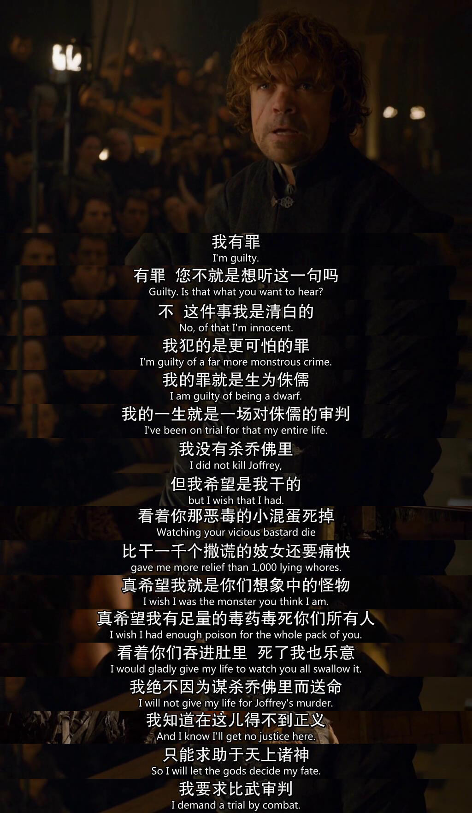

今天博主跟大家分享一部个人非常喜欢的美剧《权力的游戏》。本人是从17年夏天开始迷上这部剧的，并且坠入深渊成为死忠粉——社交账号的头像、手机壁纸以及手机壳等都换上了权游的图案。目前1—7季我已经看完4遍，等第八季开播后开始刷第5遍。（博主是一个不爱说话的人，但是提及《权力的游戏》，我能滔滔不绝~~）
从表面上看，乔治·R·R·马丁的《冰与火之歌》（又名《权力的游戏》）写的是巨龙、战争、政治、背叛与联盟。但马丁曾表明，他的这一系列巨著写的其实是人类的内心冲突——换句话说，所有这些外部事件，都是在创造机会让角色与他们自己的世界观和价值观发生矛盾，并让这些矛盾冲突影响剧情的发展。这也就是这部剧的精彩所在！
下面简述几个有趣的故事节点：
珊莎·斯塔克——结婚3次
珊莎·斯塔克是奈德·斯塔克的大女儿。奈德·斯塔克被国王命为国王之手前往君临城辅佐国王治国，同时珊莎许配给国王的儿子乔弗里；后来“小玫瑰”玛格丽的到来乔弗里取消和珊莎的婚约，珊莎被许配给乔弗里的叔叔“小恶魔”提利昂；在乔弗里被毒死后嫌疑人落在了珊莎头上，逃亡的珊莎又被“小拇指”贝里席出卖给了小剥皮拉姆斯·波顿……

艾莉亚·斯塔克——走哪儿死哪儿
艾莉亚·斯塔克是奈德·斯塔克的小女儿。在艾莉亚进君临城不久，她老爹奈德·斯塔克被陷害砍头；随后逃亡至奔流城找她的母亲和大哥，然而当天，母亲和大哥也被杀害；走投无路的艾莉亚在猎狗桑铎·克里冈的“照看”下带到谷地（实际上猎狗想把她带到她姨妈那里拿赎金），然而她姨妈也被杀害……

布蕾妮——效忠谁谁就死，艾莉亚和珊莎除外
布蕾妮原本作为彩虹骑士效忠于蓝礼；在蓝礼被杀害后宣誓效忠于对自己有恩的凯特琳（奈德·斯塔克的妻子/艾利亚·斯塔克和珊莎·斯塔克的母亲）；由于凯特琳的嘱托，要求在护送人质弑君者詹姆·兰尼斯特的情况下换回自己的两个女儿艾莉亚和珊莎并保护她们的安全；在凯特琳于奔流城被杀害后，布蕾妮始终守护自己的誓言效忠艾莉亚和珊莎。

“小玫瑰”玛格丽·提利尔——改嫁改嫁再改嫁
在国王劳勃·拜拉席恩被野猪顶死后，蓝礼（国王的弟弟）自封为王并准备攻打君临城。小玫瑰是蓝礼的妻子，随着蓝礼的死亡，小玫瑰“改嫁”给国王的儿子乔弗里；乔弗里死后又“改嫁”给乔弗里的弟弟托曼……

这些“三重奏”看似有意而为之，但在剧中一点儿都不突兀、不冲突。
人物
- 我最喜欢的角色有两个：“小恶魔”提利昂·兰尼斯特和艾莉亚·斯塔克。
提利昂·兰尼斯特被称为“小恶魔”，在于他是个侏儒。在这样的故事背景下，一个侏儒是不可能存活的。幸运的是，他降生于有权有势的兰尼斯特家族。他是难产出生，他母亲随之死亡，因此他父亲和他姐姐对他怀恨在心。我对他的敬佩在于，提利昂——一个家人讨厌他，外人看他也是个笑话的小男人，偏偏用自己的聪明果敢、能言善辩、明辨是非给观众内心构造了一个强大有力的巨人形象！

艾利亚·斯塔克，原本可以顺理成章的成为贵族小姐——打扮得体、懂得烹饪和穿针引线这种女人该干的活。可她就是不走寻常路，她骑马射箭，她向布拉佛斯首席剑士学习剑术。最终成为一个顶级刺客——无面者！
你只有看过这部剧，才能感受到它强大的魅力！
（本文为博主原创文章，转载请附上博文链接！ https://surperjin.github.io/2019/04/16/got/）